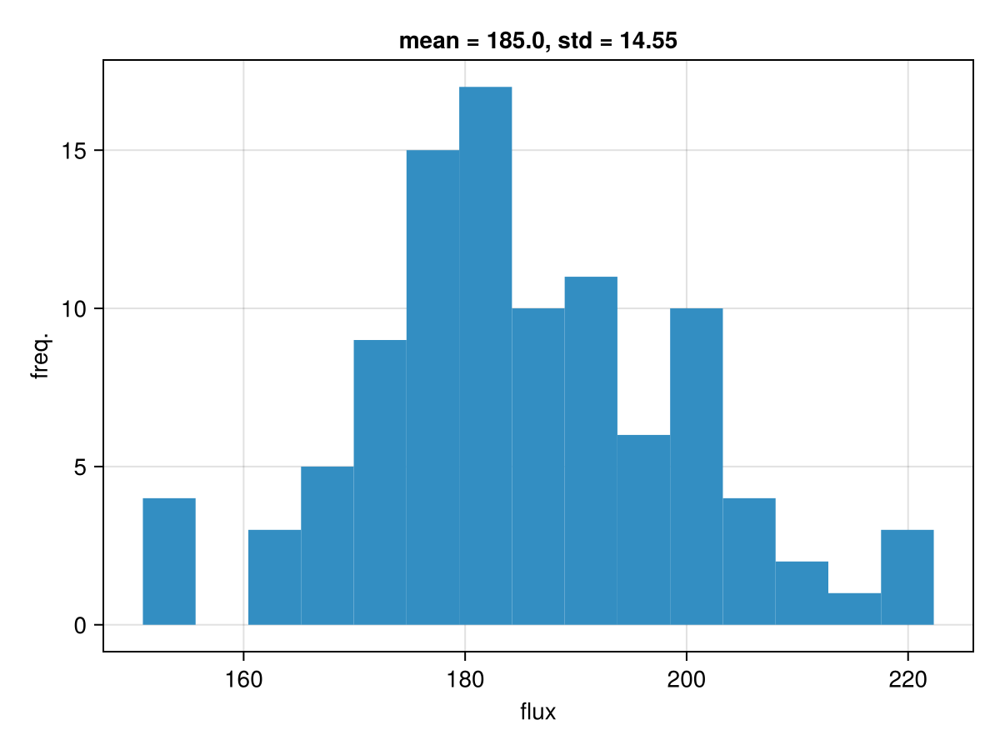

WhereTheWaterFlows.Randomly (WWFR)
WWFR provides Monte Carlo wrappers to propagate field uncertainty through deterministic routing models.
It supports subaerial routing uncertainty (make_fns_subaerial), subglacial routing uncertainty (make_fns_subglacial). It implements the spatial uncertainty in the input fields using configurable Gaussian random fields (GRFs) which produce spatially correlated noise.
Workflow
Typical usage is:
- define uncertainty models for uncertain fields,
- build
model,sample, andreduce!withmake_fns_*, - run Monte Carlo with
map_mc.
The key design idea is that map_mc is generic: it does not know anything about routing fields. It only calls three functions you provide:
sample(): generate one stochastic input realization,model(args...): run one deterministic forward model,reduce!: aggregate outputs over many realizations.
Uncertainty model
Uncertainty stores how one field should be perturbed:
Uncertainty(; absuc=0,
reluc=0,
correlation_length=1,
covariance_fn=gaussian_kernel,
abs_bounds=(-Inf, Inf))For a base field f, each realization is generated as:
- draw a zero-mean unit-variance correlated GRF
xi, - scale it with absolute and relative amplitudes,
- optionally clip perturbation values,
- add perturbation back to the field.
In code terms (as implemented):
delta = xi .* absuc .+ xi .* f .* reluc
delta = clamp.(delta, abs_bounds...)
f_realization = f .+ deltaParameter meaning
| Field | Meaning |
|---|---|
absuc | Absolute perturbation amplitude (scalar or array-like) |
reluc | Relative perturbation amplitude, scaled by local field value |
correlation_length | Correlation length in physical units (same units as dx) |
covariance_fn | Spatial kernel (gaussian_kernel, exponential_kernel, or custom) |
abs_bounds | Bounds applied to perturbation delta before adding to field |
GRFs: how they work
WWFR uses FFT-based GRF sampling (following Raess et al., 2019).
Correlation length conversion: if the grid spacing is dx, then WWFR converts:
len = correlation_length / dxso kernels operate in cell units.
Kernel choice:
gaussian_kernel: smoother, more diffuse perturbationsexponential_kernel: rougher, shorter-scale structure for same nominal length- custom kernel: pass any
kernel_fn(nx, ny, len)compatible function
What can be configured
High-level Monte Carlo controls:
map_mc(model, sample, reduce!, n; progressmeter=true)n: number of realizations (n <= 2048enforced)progressmeter: setfalsefor quiet batch/CI runs
Subaerial wrapper (make_fns_subaerial):
- uncertain fields:
dem,source - routing controls:
drain_pits,bnd_as_sink,nan_as_sink - sink groups for aggregation:
ctch_sinks
Subglacial wrapper (make_fns_subglacial):
- uncertain fields:
surfdem,beddem,floatfrac,source- Note: unlike
waterflows_subglacial, which accepts scalarfloatfrac,make_fns_subglacialrequiresfloatfracto be an array.
- Note: unlike
- physical controls:
gamma,rhow,rhoi - processing controls:
mask,ctch_sinks,min_lake_depth
Why reduction is needed
A Monte Carlo run can easily produce hundreds of large 2D outputs. Storing all realizations is expensive and often unnecessary. reduce! keeps only summary statistics (means, frequencies, selected per-sample vectors), which is both memory-efficient and directly useful for interpretation.
In WWFR wrappers, reduction happens in three stages:
reduce!()initializes aggregate storage.reduce!(aggr, sample_output)updates aggregate values per realization.reduce!(aggr)finalizes (typically divides accumulated maps byn).
How outputs are reduced
Subaerial
The reduction function returned by make_fns_subaerial accumulates:
areas_total += output.areastream_length += output.slencatchments[:, :, i] += catchment(output.dir, ctch_sinks[i])catchment_fluxes[i]stores one scalar per sample (not averaged in place)
At the finalize step map-style fields are normalized by n_samples (so they are means/frequencies) and flux vectors remain per-sample records by design.
Subglacial
The reduction function returned by make_fns_subglacial accumulates: routed maps and diagnostics (areas_total, lake_depth_*, lake_mask_*, sc_locs, kappas, catchments) and appends sink-flux records to vectors (catchment_fluxes.total/dissipation/pressmelt).
At the finalize step map-style fields are normalized by n_samples (so they are means/frequencies) and flux vectors remain per-sample records by design.
When ctch_sinks is non-empty, aggr.catchment_fluxes has subglacial-specific structure:
aggr.catchment_fluxesis a named tuple(total, dissipation, pressmelt).- Each field is a
Vectorwith lengthlength(ctch_sinks). - Element
iof each field is aVector{Float32}with lengthn_samples, containing the per-realization flux for outlet groupi.
So for subglacial runs, the total-flux distribution at outlet group i is accessed as aggr.catchment_fluxes.total[i]. This differs from the subaerial wrapper, where per-outlet total fluxes are stored directly as aggr.catchment_fluxes[i] (no .total).
Minimal usage pattern:
using Statistics
for i in eachindex(ctch_sinks)
fluxes = aggr.catchment_fluxes.total[i] # Vector{Float32}, length n_samples
println("Outlet $i: mean=$(mean(fluxes)), std=$(std(fluxes))")
endctch_sinks: what it means
ctch_sinks defines sink groups, as described in Subglacially: Defining outlet groups, for which WWFR reports catchment membership and integrated fluxes.
Each element of ctch_sinks is a collection of sink cells (typically a Vector{CartesianIndex} or CartesianIndices). For each Monte Carlo sample, WWFR computes the full upstream catchment draining to each sink group. You can pass multiple groups, e.g. upper/lower terminus sectors, to compare how uncertainty redistributes flux between outlets.
This enables statistics like:
- probability that a cell drains to outlet group
i(aggr.catchments[:, :, i]), - distribution of total flux entering outlet group
i(aggr.catchment_fluxes[i]in subaerial, andaggr.catchment_fluxes.total[i]in subglacial).
Defining custom make_fns_*
The built-in make_fns_subaerial/make_fns_subglacial are templates. If your model has different outputs, constraints, or diagnostics, define your own trio:
model(args...)sample()reduce!(three-method interface)
then call map_mc(model, sample, reduce!, n).
Minimal skeleton:
model(a, b) = my_forward_model(a, b)
sample() = (draw_a(), draw_b())
function reduce!()
return (sumfield = 0.0, n = Ref(0))
end
function reduce!(aggr, out)
aggr.sumfield += out.metric
aggr.n[] += 1
return aggr
end
function reduce!(aggr)
aggr.sumfield /= aggr.n[]
return aggr
endThe reduce! function has three methods: 0-arg method sets up the storage needed in the reduction (this gets called once at the beginning of the mc-iterations); the 2-arg method is called after each forward model evaluation and reduces/aggregates the forward model output into what is stored; the 1-arg method is then called at the end to finalize the aggregated results.
Note: only reduce! is allowed to not be thread-safe, model and sample need to be thread-safe.
Minimal subaerial example
using WhereTheWaterFlows, CairoMakie
using Statistics
using Random; Random.seed!(42)
WWFR = WhereTheWaterFlows.Randomly
n = 80
dx = 100.0
x = range(-pi, pi, length=n)
dem = sin.(x) .* cos.(x')
source = fill(1e-3 / dx^2, size(dem))
dem_uc = WWFR.Uncertainty() # fixed DEM
source_uc = WWFR.Uncertainty(absuc=0.0, reluc=0.2, correlation_length=15 * dx)
ctch_sinks = [CartesianIndices((1:n, 1:1))[:]]
model, sample, reduce! = WWFR.make_fns_subaerial(dx,
dem, dem_uc,
source, source_uc,
ctch_sinks)
aggr = WWFR.map_mc(model, sample, reduce!, 100; progressmeter=false)
mu, sd = mean(aggr.catchment_fluxes[1]), std(aggr.catchment_fluxes[1])
hist(aggr.catchment_fluxes[1],
axis=(title = "mean = $(round(mu, sigdigits=4)), std = $(round(sd, sigdigits=4))",
xlabel = "flux", ylabel="freq."))
Output interpretation
Subareal aggregate outputs (make_fns_subaerial)
For subaerial runs, aggregated outputs:
areas_total: Monte Carlo mean routed area/discharge fieldstream_length: Monte Carlo mean stream-length fieldcatchments: per-sink occurrence frequency map (0-1)catchment_fluxes: per-sink vectors of sample fluxes
Subglacial aggregate outputs (make_fns_subglacial)
The table below consolidates all fields produced by aggr = map_mc(...) when using make_fns_subglacial.
| Field | Shape / type | Meaning | Reduction semantics |
|---|---|---|---|
aggr.areas_total | Matrix{Float32} | Total routed discharge proxy [m^3/s] | Mean over samples |
aggr.areas_extra | Matrix{Float32} | Extra routed discharge from subglacial melt terms [m^3/s] | Mean over samples |
aggr.melt_rate | Matrix{Float32} | Dissipation + pressure-melt generation rate [m/s] | Mean over samples |
aggr.lake_depth_fixed_surface | Matrix{Float32} | Lake depth for fixed-surface assumption [m] | Mean over samples |
aggr.lake_mask_fixed_surface | Matrix{Float32} | Lake-occurrence frequency (depth > min_lake_depth) for fixed-surface case [0, 1] | Fraction over samples |
aggr.lake_depth_free_surface | Matrix{Float32} | Lake depth for free-surface assumption [m] | Mean over samples |
aggr.lake_mask_free_surface | Matrix{Float32} | Lake-occurrence frequency (depth > min_lake_depth) for free-surface case [0, 1] | Fraction over samples |
aggr.sc_locs | Matrix{Float32} | Supercooling occurrence frequency [0, 1] | Fraction over samples |
aggr.kappas | Matrix{Float32} | Mean supercooling deflection | Mean over samples |
aggr.catchments | Array{Float16,3} (nx x ny x n_groups) | Catchment-membership frequency for each ctch_sinks group [0, 1] | Fraction over samples |
aggr.catchment_fluxes.total | Vector{Vector{Float32}} (length n_groups) | Per-group total outlet flux [m^3/s] | Per-sample vectors (not averaged) |
aggr.catchment_fluxes.dissipation | Vector{Vector{Float32}} (length n_groups) | Per-group dissipation-melt flux contribution records [m^3/s] | Per-sample vectors (not averaged) |
aggr.catchment_fluxes.pressmelt | Vector{Vector{Float32}} (length n_groups) | Per-group pressure-melt flux contribution records [m^3/s] | Per-sample vectors (not averaged) |
aggr.lake_vol_fixed_surface | Vector{Float32} (length n_samples) | Domain-summed lake depth above threshold (fixed-surface case), sample by sample | Per-sample vector (not averaged) |
aggr.lake_vol_free_surface | Vector{Float32} (length n_samples) | Domain-summed lake depth above threshold (free-surface case), sample by sample | Per-sample vector (not averaged) |
aggr.n_samples[] | Int (Ref) | Number of Monte Carlo realizations accumulated | Final count |
Notes:
- For
aggr.catchment_fluxes.*, elementiis the flux distribution for outlet groupi; each inner vector has lengthaggr.n_samples. - If
ctch_sinksis empty,aggr.catchmentshas zero groups andaggr.catchment_fluxes.*are empty vectors.
Practical guidance
- Use
absucfor additive error floors;relucfor proportional uncertainty. - Keep
correlation_lengthmeaningfully smaller than domain size (as a rule of thumb, at least around 3x smaller than domain extent). - Set
Random.seed!before building samplers for reproducible runs. - Start with small
nwhile validating model setup; scale up after checks.
Examples
examples/wwfr-simple.jl: quick startexamples/randomly/source-uncertainty-sweep.jl: source-vs-DEM uncertainty comparison and sensitivity sweepexamples/subglacially/ice-cap-full-workflow.jl: subglacial deterministic+ Monte Carlo workflow, including sink discovery andctch_sinkspartitioning for per-outlet flux distributions
From the examples/ environment:
include("wwfr-simple.jl")
include("randomly/source-uncertainty-sweep.jl")
include("subglacially/ice-cap-full-workflow.jl")See also: Examples, Subglacially, and API Reference.